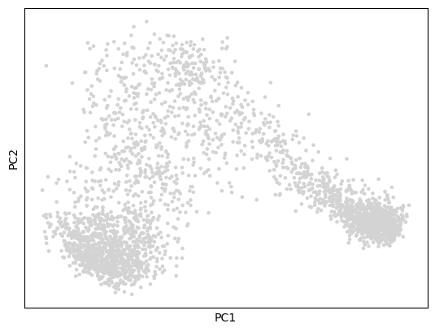
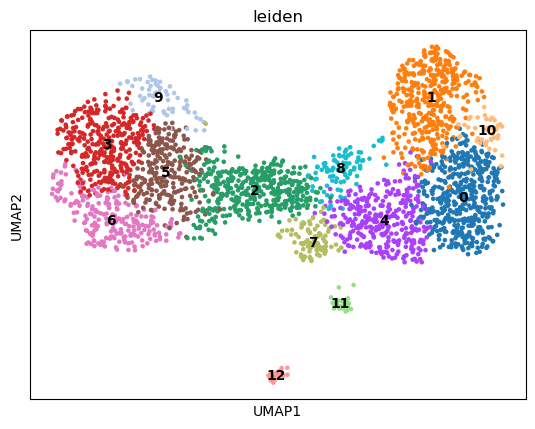
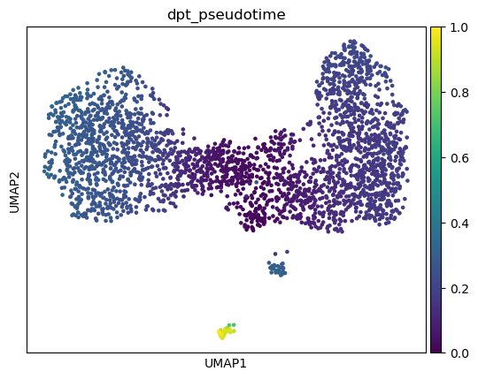
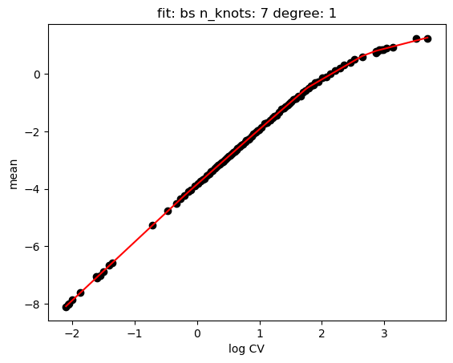
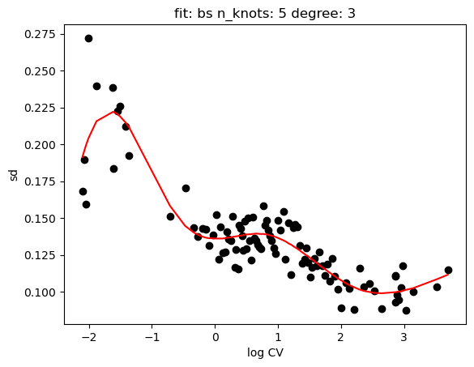
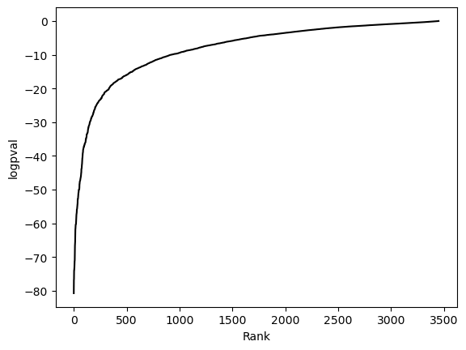
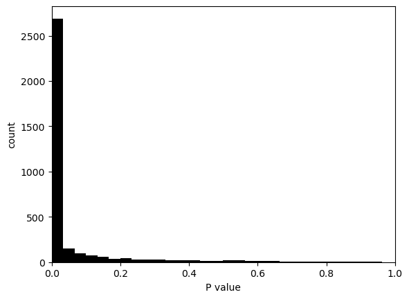
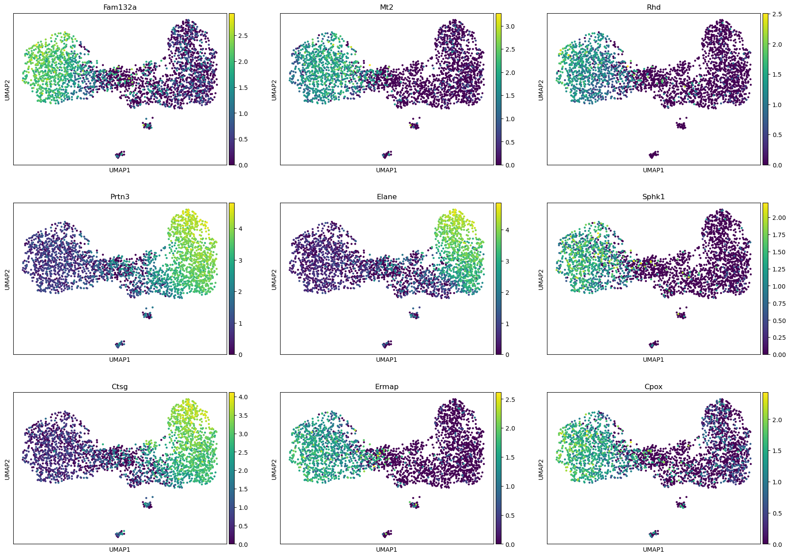

Trajectory Analysis#
[1]:
import scanpy as sc
import singleCellHaystack as hs
Load data#
[2]:
adata = sc.datasets.paul15()
adata
WARNING: In Scanpy 0.*, this returned logarithmized data. Now it returns non-logarithmized data.
/home/diez/miniconda3/envs/singleCellHaystack/lib/python3.11/site-packages/scanpy/datasets/_datasets.py:202: ImplicitModificationWarning: Trying to modify attribute `._uns` of view, initializing view as actual.
adata.uns['iroot'] = 840
[2]:
AnnData object with n_obs × n_vars = 2730 × 3451
obs: 'paul15_clusters'
uns: 'iroot'
Preprocess#
[3]:
sc.pp.normalize_total(adata)
sc.pp.log1p(adata)
sc.tl.pca(adata)
sc.pl.pca(adata)
/home/diez/miniconda3/envs/singleCellHaystack/lib/python3.11/site-packages/scanpy/plotting/_tools/scatterplots.py:392: UserWarning: No data for colormapping provided via 'c'. Parameters 'cmap', 'norm' will be ignored
cax = scatter(

[4]:
sc.pp.neighbors(adata)
sc.tl.leiden(adata)
sc.tl.umap(adata)
sc.pl.umap(adata, color="leiden", legend_loc="on data")
/home/diez/miniconda3/envs/singleCellHaystack/lib/python3.11/site-packages/umap/distances.py:1063: NumbaDeprecationWarning: The 'nopython' keyword argument was not supplied to the 'numba.jit' decorator. The implicit default value for this argument is currently False, but it will be changed to True in Numba 0.59.0. See https://numba.readthedocs.io/en/stable/reference/deprecation.html#deprecation-of-object-mode-fall-back-behaviour-when-using-jit for details.
@numba.jit()
/home/diez/miniconda3/envs/singleCellHaystack/lib/python3.11/site-packages/umap/distances.py:1071: NumbaDeprecationWarning: The 'nopython' keyword argument was not supplied to the 'numba.jit' decorator. The implicit default value for this argument is currently False, but it will be changed to True in Numba 0.59.0. See https://numba.readthedocs.io/en/stable/reference/deprecation.html#deprecation-of-object-mode-fall-back-behaviour-when-using-jit for details.
@numba.jit()
/home/diez/miniconda3/envs/singleCellHaystack/lib/python3.11/site-packages/umap/distances.py:1086: NumbaDeprecationWarning: The 'nopython' keyword argument was not supplied to the 'numba.jit' decorator. The implicit default value for this argument is currently False, but it will be changed to True in Numba 0.59.0. See https://numba.readthedocs.io/en/stable/reference/deprecation.html#deprecation-of-object-mode-fall-back-behaviour-when-using-jit for details.
@numba.jit()
/home/diez/miniconda3/envs/singleCellHaystack/lib/python3.11/site-packages/umap/umap_.py:660: NumbaDeprecationWarning: The 'nopython' keyword argument was not supplied to the 'numba.jit' decorator. The implicit default value for this argument is currently False, but it will be changed to True in Numba 0.59.0. See https://numba.readthedocs.io/en/stable/reference/deprecation.html#deprecation-of-object-mode-fall-back-behaviour-when-using-jit for details.
@numba.jit()
/home/diez/miniconda3/envs/singleCellHaystack/lib/python3.11/site-packages/scanpy/plotting/_tools/scatterplots.py:392: UserWarning: No data for colormapping provided via 'c'. Parameters 'cmap' will be ignored
cax = scatter(

Calculate DPT trajectories#
[5]:
sc.tl.diffmap(adata)
sc.tl.dpt(adata)
sc.pl.umap(adata, color="dpt_pseudotime")

Run singleCellHaystack#
For now there is not direct way to access the pseudotime information from AnnData object. But we can pass the expression matrix and 1D coordinates directly.
[6]:
import numpy
pseudotime = numpy.array(adata.obs.dpt_pseudotime.to_list())
pseudotime = pseudotime.reshape(-1, 1)
pseudotime
[6]:
array([[0.0275316965],
[0.1844685227],
[0.2824616432],
...,
[0.0244765058],
[0.1840221733],
[0.2610901594]])
[7]:
res = hs.haystack(adata.X, coord=pseudotime, features=adata.var_names)
> entering array method ...
> scaling coordinates ...
> calculating feature stds ...
> calculating grid points ...
> calculating distance to cells ...
> calculating densities ...
> calculating Q dist ...
> calculating KLD for 3451 features ...
100%|█████████████████████████████████████████████████████████████████████████████| 3451/3451 [00:01<00:00, 2068.14it/s]
> calculating feature's CV ...
> selecting genes to randomize ...
> calculating randomized KLD ...
100%|█████████████████████████████████████████████████████████████████████████████████| 100/100 [00:04<00:00, 20.31it/s]
> calculating P values ...
> done.
[8]:
hs.plot_rand_fit(res, "mean")
hs.plot_rand_fit(res, "sd")


[9]:
hs.plot_pval_rank(res)
hs.plot_pval_hist(res)


[10]:
sum = res.top_features(9)
sum
[10]:
| gene | KLD | CV | pval | pval_adj | logpval | logpval_adj | |
|---|---|---|---|---|---|---|---|
| 1121 | Fam132a | 0.354324 | 1.111779 | 1.907912e-81 | 6.584203e-78 | -80.719442 | -77.181497 |
| 1954 | Mt2 | 0.476056 | 1.326631 | 1.375929e-77 | 4.748330e-74 | -76.861404 | -73.323459 |
| 2590 | Rhd | 0.601656 | 1.491535 | 3.467935e-77 | 1.196784e-73 | -76.459929 | -72.921984 |
| 2425 | Prtn3 | 0.164153 | 0.776379 | 1.141090e-74 | 3.937903e-71 | -73.942680 | -70.404735 |
| 1040 | Elane | 0.291931 | 1.066940 | 1.240241e-74 | 4.280072e-71 | -73.906494 | -70.368549 |
| 2910 | Sphk1 | 0.568372 | 1.485415 | 3.270921e-74 | 1.128795e-70 | -73.485330 | -69.947385 |
| 815 | Ctsg | 0.212397 | 0.907998 | 8.823847e-74 | 3.045110e-70 | -73.054342 | -69.516397 |
| 1072 | Ermap | 0.440583 | 1.333001 | 1.493464e-72 | 5.153945e-69 | -71.825805 | -68.287860 |
| 778 | Cpox | 0.349522 | 1.195660 | 6.859488e-72 | 2.367209e-68 | -71.163708 | -67.625763 |
[11]:
sc.pl.umap(adata, color=sum.gene, ncols=3)

Export results#
[12]:
#sum.to_csv("results-trajectory.csv")